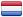

<!--The content below is only a placeholder and can be replaced.-->
<mat-toolbar class="primary">
  <a href="/">
    <span>{{title | titlecase}}</span>
  </a>

  <span class="fill-remaining-space"></span>

  <a class="nav-item-link" title="Vacatures" routerLink="/joboffers"><span>{{'NAVBAR.JOBOFFERS' | translate}}</span><i class="material-icons nav-icon">account_balance</i></a>

  <ng-container *ngIf="authenticationService.isLoggedIn()">

    <!-- Student links go here -->
    <ng-container *ngIf="authenticationService.isStudent()">
        <a class="pointer nav-item-link" [mat-menu-trigger-for]="menu">{{authenticationService.user.firstName | titlecase}} {{authenticationService.user.lastName | titlecase}}<i class="material-icons nav-icon">school</i></a>
        <mat-menu #menu="matMenu">
          <a mat-menu-item color="default" title="{{'NAVBAR.PROFILE' | translate}}"
          routerLink="/user/view-profile/{{authenticationService.user.uuid}}">{{'NAVBAR.PROFILE' | translate}}</a>
          <a mat-menu-item color="default" title="{{'NAVBAR.EDITPROFILE' | translate}}"
          routerLink="/user/edit-profile/{{authenticationService.user.uuid}}">{{'NAVBAR.EDITPROFILE' | translate}}</a>
        </mat-menu>
    </ng-container>

    <!-- Company links go here -->
    <ng-container *ngIf="authenticationService.isCompany()">
      <a class="pointer nav-item-link" [mat-menu-trigger-for]="menu">{{authenticationService.user.email | titlecase}} <i class="material-icons nav-icon">business_center</i></a>
      <mat-menu #menu="matMenu">
        <a mat-menu-item color="default" title="Bedrijf inzien" routerLink="/company/{{authenticationService.user.uuid}}">{{'NAVBAR.PROFILE' | translate}}</a>
        <a mat-menu-item color="default" title="Mijn vacatures" routerLink="/users/{{authenticationService.user.uuid}}/joboffers">{{'NAVBAR.MYJOBOFFERS' | translate}}</a>
        <a mat-menu-item color="default" title="Vacature toevoegen" routerLink="/joboffers/add">{{'NAVBAR.ADDJOBOFFER' | translate}}</a>
      </mat-menu>
    </ng-container>

    <!-- Generic logged in links go here i.e. 'log out' IF WE HAD ONE -->
    <a class="nav-item-link" title="{{'NAVBAR.LOGOUT' | translate}}" routerLink="/login">{{'NAVBAR.LOGOUT' | translate}} <i class="material-icons nav-icon">exit_to_app</i></a>

  </ng-container>

  <!-- Non logged in links go here -->
  <ng-container *ngIf=!authenticationService.user>
    <a class="nav-item-link" title="Registreren"
      routerLink="/register"> {{'NAVBAR.REGISTER' | translate}} <i class="material-icons nav-icon">create<!-- add_circle --></i></a>
    <a class="nav-item-link" title="{{'NAVBAR.LOGIN' | translate}}"
      routerLink="/login"> {{'NAVBAR.LOGIN' | translate}} <i class="material-icons nav-icon">account_circle</i></a>
  </ng-container>
</mat-toolbar>

<router-outlet></router-outlet>

<div class="footer">
  <div class="footer-content">
    <p>{{'FOOTER.SELECT.LANGUAGE' | translate}}:  /  </p>
  </div>
</div>
